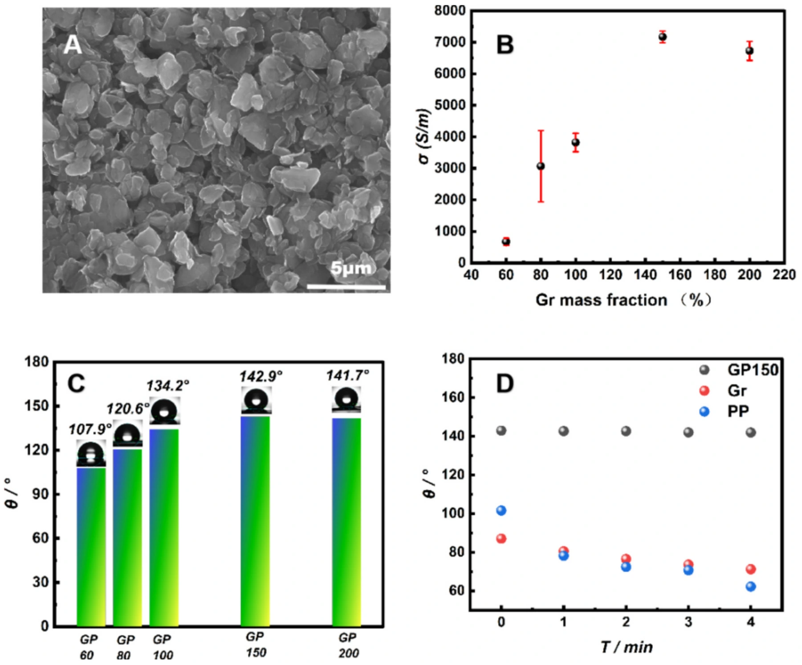
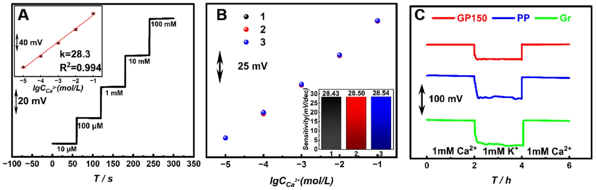
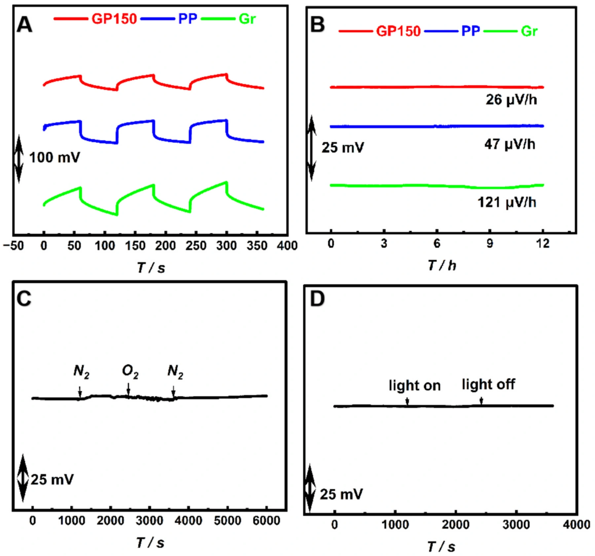
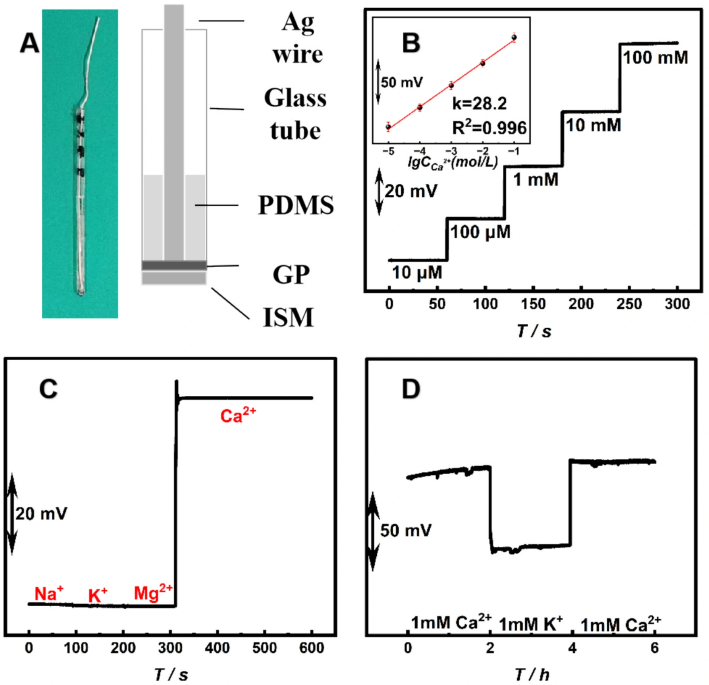
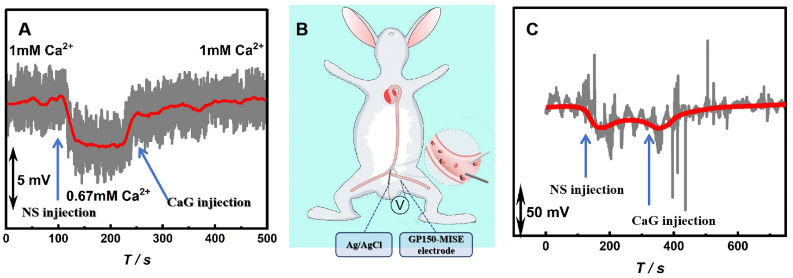

石墨–PDMS 固态离子选择电极：连续监测血液游离钙
以石墨–PDMS 复合材料作为固态转导层，将导电性、疏水性与界面黏附结合，构建针形钙离子选择电极，连接材料优化、稳定电位读出与动物体内连续监测。
28.2 mV/decade针形电极响应斜率
约 25 μV/h摘要报告的电位漂移
动物体内验证新西兰兔血液监测
导电与疏水兼顾的固态转导层
石墨提供导电网络，PDMS 赋予疏水性与黏附能力。论文通过 SEM、电导率与接触角比较不同配方，选择 GP150 构建稳定的固态接触界面，减少水层形成对电位读出的干扰。

从浓度校准到界面可靠性
在玻碳基底上测试钙离子响应，获得接近能斯特关系的校准曲线。不同电极的响应和水层测试共同检验转导层的重复性与界面稳定性，为针形微电极设计建立依据。

降低电位漂移，支持持续读出
长时间电位记录以及氧气、光照等干扰条件测试用于评估固态接触的稳定性。论文摘要报告电位漂移约 25 μV/h，体现复合转导层对连续测量的价值。

将材料优势集成到微电极
针形 GP150-MISE 将银丝、玻璃管、PDMS、复合转导层与离子选择膜集成，获得 28.2 mV/decade 的响应斜率。Na⁺、K⁺、Mg²⁺ 等干扰离子测试和水层测试展示选择性与界面稳定性。

追踪输注引起的游离钙变化
论文先比较血浆中生理盐水与葡萄糖酸钙加入后的响应，再在新西兰兔体内监测输注过程中的血液游离钙变化。该结果属于动物实验验证；走向临床仍需进一步评估长期生物相容性、复杂生理条件与使用安全性。

论文来源
A graphite-PDMS composite-based solid-contact ion-selective electrode for continuous monitoring blood ionized calcium in vivo
Yongchun Li, Yesong Xu, Hongrui Liu, Hao Duan, Hong Wang
Microchemical Journal 217 (2025), 114827
DOI：10.1016/j.microc.2025.114827AMBIC LaboratorySUN YAT-SEN UNIVERSITY